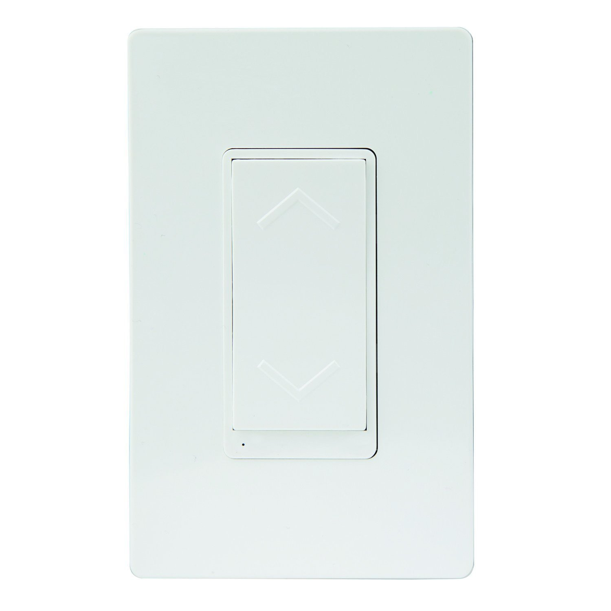
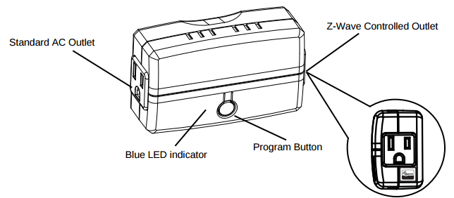

Enerwave ZWN-333 Z-Wave Wireless Plug-In Appliance On/Off Switch Module¶

Basic operation¶
- Features A Z-Wave Enabled/Controlled Outlet Which Can be Manually Enabled and Disabled using the Program Button on the Front of the Unit and an “Always On” Standard Outlet
- This Module is Fully Interoperable with Other Z-Wave Enabled Devices and can be Easily Added into your Z-Wave Network
- Wirelessly Switch your Devices (such as Lights, Fans) ON / OFF from Smart Phone Applications, Any Web Browser from Any PC or Mac, or Internet Connected Tablet
- The ON / OFF Control of the Connected Load can be Programmed into Z-Wave Scenes, with Dynamic Scheduling and Events from Anywhere
- The ZWN-333 Acts as a Z-Wave Repeater to Extend the Range of your Z-Wave Signal up to 100ft. Includes a two year manufacturer’s warranty. Manufactured in a ISO9001 Registered Facility.
How to add to VENUS app¶

- 1. Activation
- Press “Add button” (button ‘+’) in app
- Plugin device to power supply socket
- Press the program button once
- Wait for VENUS scan & detect this device and inform in app
- 2. Reset then re-add
- Press “Add button” (button ‘+’) in app
- Plugin device to power supply socket
- Press the program button once (to reset)
- Press the program button once more(to add)
- Wait for VENUS scan & detect this device and inform in app
How to add/remove associated device(s) to¶
This devive can support single association group with up to 5 target nodes.
To add associated device(s) to this sensor, below action is required:
- Add z-wave notified-devices (which will be associated to this sensor) to VENUS
- Select Associate button and then select notified-device(s) to add
- Short press ON/OFF button once
- If successful, pop-up notification displays in VENUS app
To remove associated device(s) from this sensor, below action is required:
- Select Associate button and then select notified-device(s) to remove
- Short press ON/OFF button once
- If successful, pop-up notification displays in VENUS app
Configuration description¶
Configuration LED indicator reverse
Available 0: Turn light ON, LED indicator OFF 1: Turn light ON, LED indicator ON Default 0 Configuration button reverse
Available 0: Top button is ON button, bottom button is OFF button 1: Top button is OFF button, bottom button is ON button Default 0